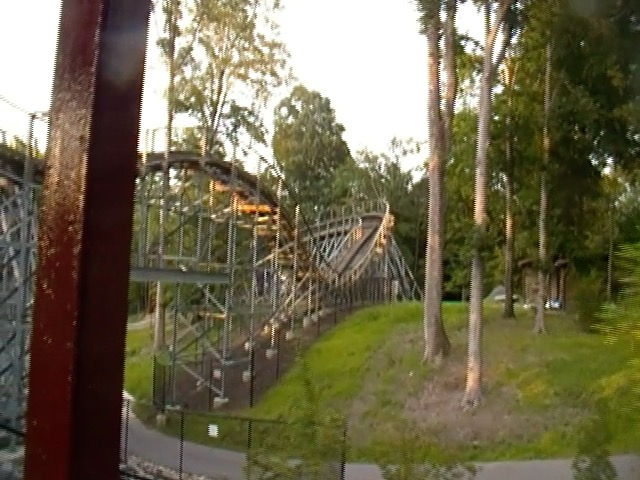

| |
Invadr Review

Today, we'll be heading over to Busch Gardens Williamsburg, where we'll be reviewing their wooden coaster, Invadr. Now if you just hear that at face value, you will probably be dissapointed in this ride since....Invadr is not an amazing ride by any means. Far from it. In fact, this honestly, stands as my least favorite GCI ever (at least my least favorite that's still standing). However, that's not because this is some stupid lame wooden coaster that's awful and needs to be demolished. Because....this is actually a family wooden coaster. Yeah, it is true that there are family wooden coasters that are better. But when you judge Invadr as a family coaster instead of just as a wooden coaster, suddenly, this ride is A LOT better and really good at what it's meant to be. So yeah. Enough chit-chat. Let's hop in the trains, pull down the lap bars, and we're off! We head down a small curved drop, turn around, and head straight for the lifthill. Fun little pre-lift section. Now this lifthill is pretty small. So....it's not gonna take very long before we wind up at the top. And since it's small, there's not much of a view. Well, aside from the rest of the ride we're about to go through. We reach the top, dip down, go around a turn, dip up, and head down the first drop. Surprisngly, it's a covered first drop. Didn't think there would be noise complaints at Busch Gardens Williamsburg. Or that Invadr would be the type of ride that would generate noise complaints. Nonetheless, it's still a lot of fun, and something that I really feel makes drops better. Briefly pop out in the middle of the drop, get a good headchopper, and go through an....underpass underneath the path. Not a big first drop, but it does offer a nice little bit of speed. Pop out, go up a small hill, go through a banked curve, before dipping back down to the ground. Head up a small hill, tiny little pop of airtime. Kind of like "Child's first pop of airtime". Go through another small dip before heading down a tiny curved drop. Go through another small hill, which may not have any airtime, but its still fun. Head around another banked turn, before heading into another banked left turn. Not a ton of laterals, but we're cruising, just having fun. Head up another small hill, go around a turn, before dipping down. Yeah. This may be pretty lame by normal coaster standards. But for a family coaster, this is pretty fun. Go through a tiny airtime hill, slight banked turn, and into another bump, I mean little hill. Go up and through a slight banked turnaround, before heading up through a small little curved hill. And sadly, this is the end of the ride. Short ride, but....most family coasters are short. Honestly, if you judge this as the family coaster that it is, it's pretty good. Sure, it's no Wooden Warrior, and don't even try comparing it to an adult wooden coaster. But if you have a child, or someone who's not a big roller coaster person, then this may be the perfect little wooden coaster just for them (I know a certain someone who's riding this next Busch Gardens visit),
6/10
Location: Busch Gardens Williamsburg
Opened: 2017
Built by: Great Coasters International
Last Ridden: July 26, 2019
Invadr Photos


Home
|